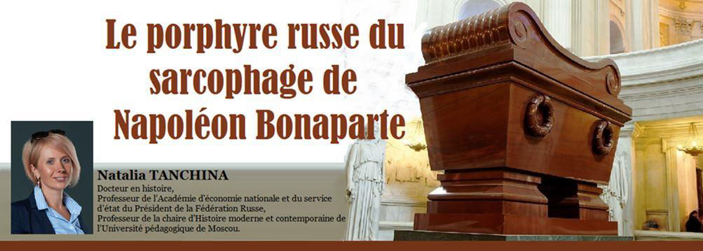
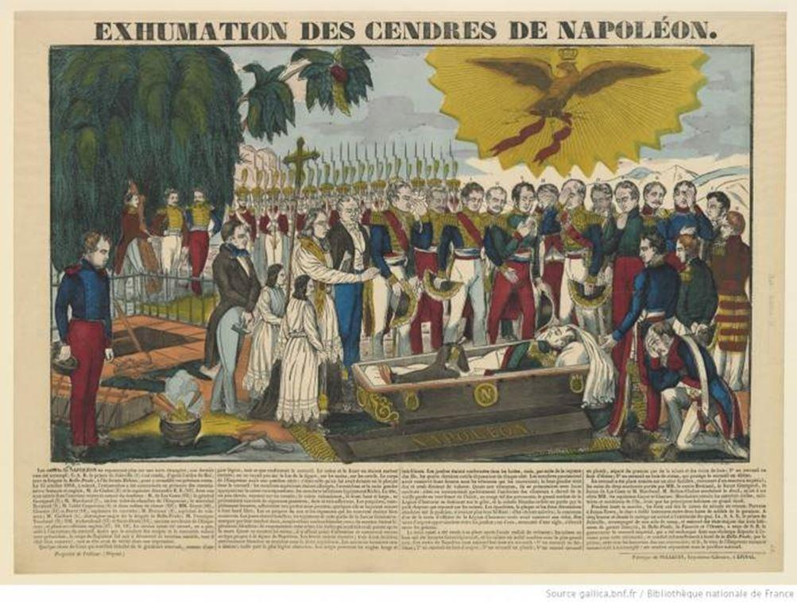
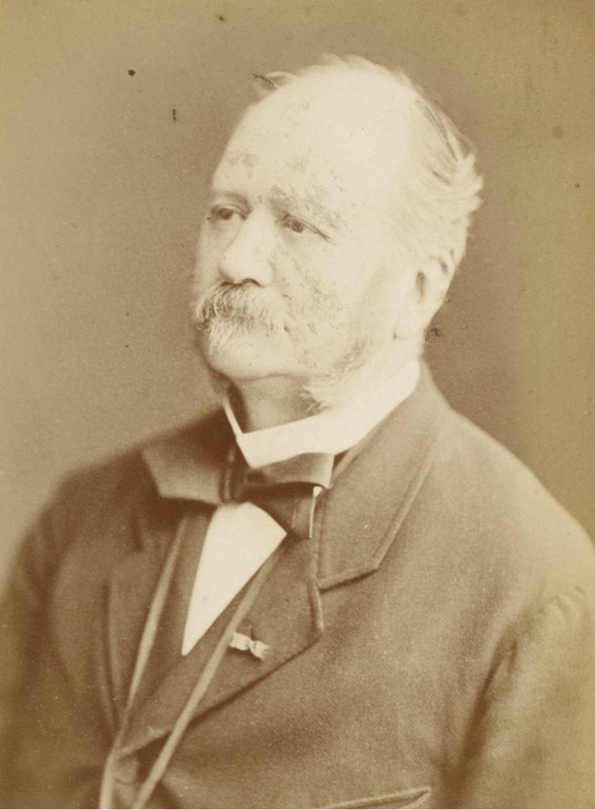
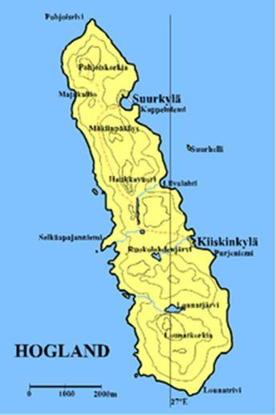
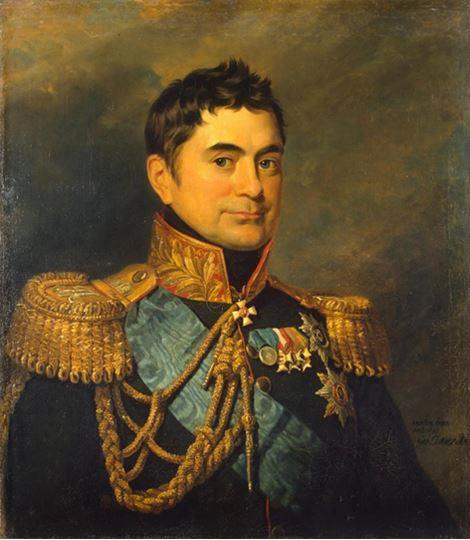
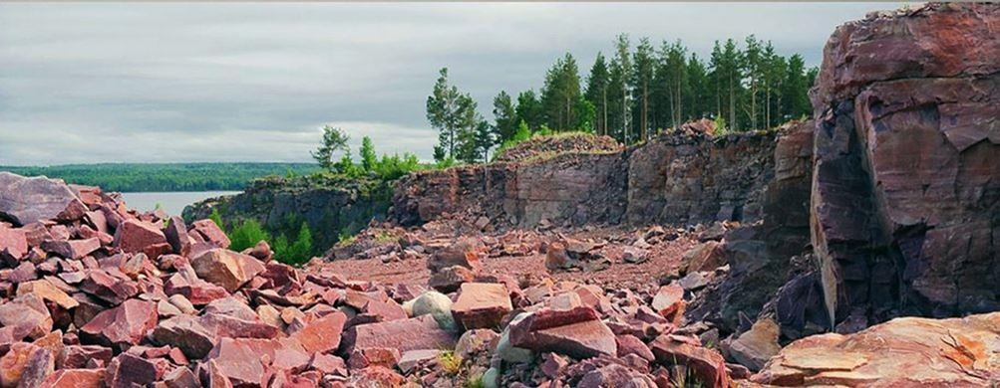
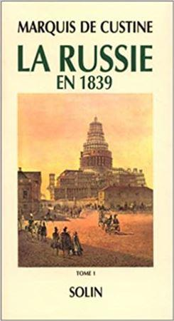
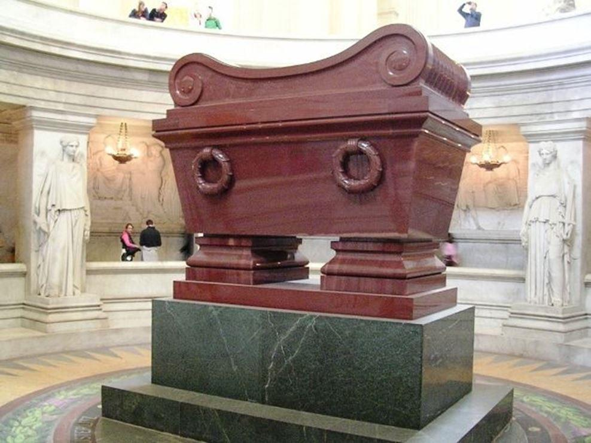
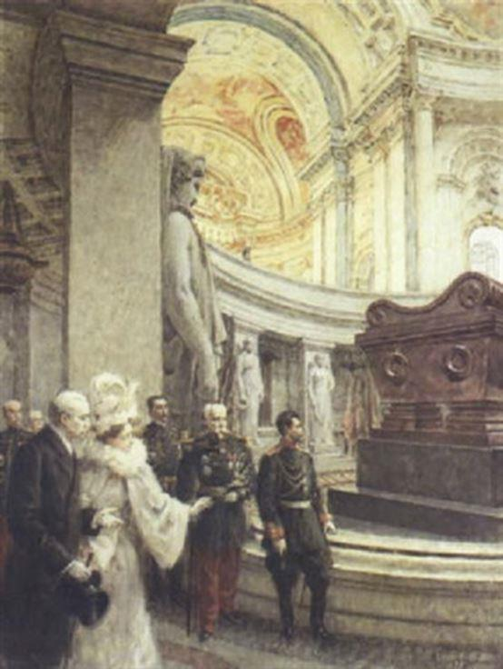

Le porphyre russe du sarcophage de Napoléon Bonaparte
par Natalia TANCHINA

Le 5 mai 1821, l’Empereur Napoléon I est mort sur l'île Sainte-Hélène. Le 15 décembre 1840, un événement historique a eu lieu à Paris : le retour des cendres de Napoléon I. Après de longues négociations avec le gouvernement britannique, le troisième fils du roi Louis-Philippe, le Prince de Joinville, est chargé du rapatriement des cendres de l’Empereur depuis Sainte-Hélène. La volonté de Napoléon s’est accomplie : « Je désire que mes cendres reposent sur les bords de la Seine, au milieu de ce peuple français que j’ai tant aimé »1.
Le cercueil de Bonaparte a été installé dans la chapelle de St. Jérôme aux Invalides. Cependant, la construction du sarcophage prendra beaucoup de temps. Il n’a ainsi été inauguré que le 2 avril 1861 par le neveu de l’Empereur Napoléon, Napoléon III. Mais l’histoire de la création du sarcophage est étroitement liée à la Russie…
L’architecte du sarcophage, Louis Visconti (1791—1853), a proposé de le fabriquer de porphyre rouge, à l’instar des sarcophages des empereurs romains. Le porphyre rouge était considéré comme une pierre royale.
Mais où trouver le porphyre ? Les carrières romaines étaient vides. On tente de faire des recherches en Grèce, en Corse et dans plusieurs localités de la France, mais toutes ces recherches n’obtiennent aucun résultat. Ce n’est qu’en 1846, qu’il devient clair que le porphyre demeure disponible en Russie. Un ingénieur italien, Gianfranco (Jean-François) Bujatti, installé depuis longtemps en Russie, envoie, depuis Saint Pétersbourg, des échantillons de pierre à Paris.
La chose la plus surprenante fut que la pierre découverte en Russie n’était en réalité pas du porphyre. Le professeur parisien Pierre-Louis Cordier a examiné cette pierre à l’aide d’un microscope (une chose rare dans ces années) et a conclu que ce minéral n’était pas du porphyre, mais qu’il s’agissait en fait du « grès métamorphose »2. Les spécialistes modernes préfèrent utiliser le terme de « quartzite de Chokcha », d’après le nom du village où la pierre a été découverte3. Dans le département des Arts du ministère de l’Intérieur, cette pierre a été enregistrée comme « l’ancien porphyre rouge russe ». Et jusqu’à présent, dans les sources diverses, notamment françaises, on maintient qu’il s’agit de « porphyre ».
À cette même époque, le célèbre voyageur français Louis-Antoine Léouzon Le Duc (1815—1889), originaire de Dijon, projetait une expédition dans les pays du Nord. Il voulait visiter la Suède, la Finlande, le Danemark et la Russie pour étudier le folklore et la littérature de ces pays. Le jeune homme avait déjà été deux fois à Saint-Pétersbourg, en 1840 et en 1842. Il avait alors servi comme gouverneur dans la maison d’un aristocrate russe, le comte Vladimir Musin-Pushkin. Il profitera de cette période pour traduire en français le roman de Mikhaïl Lermontov « le Héros de notre temps ». Il souhaitait par ailleurs faire une traduction en français de l’épopée finlandaise « Kalevala » et a commencé pour cela à apprendre le finnois.
Informé de cette expédition, le Ministère de l’Intérieur de la France a décidé de saisir cette occasion pour confier au voyageur l’opération de l’exploitation et du transport du porphyre russe4.
Cette expédition durera trois ans selon le témoignage du voyageur. Mais cette histoire reste inconnue à la fois en Russie et en France. L’histoire de l’expédition pour « le porphyre russe » a été publiée, pour la première fois, par Léouzon Le Duc en 1853 dans le mélange « Études sur la Russie et le Nord de l’Europe». En 1873, cette histoire a été publiée sous la forme d’une petite brochure intitulée «Le sarcophage de Napoléon en son tombeau des Invalides »5. En 1886, le même essai a été placé dans le livre « Souvenirs et impressions de voyage dans les pays du Nord de l'Europe, Suède, Finlande, Danemark, Russie »6 (la deuxième édition a été publiée dix ans plus tard).
***
Léouzon Le Duc a choisi un mauvais moment pour son voyage en Russie. C’était une période difficile dans les relations russo-françaises. L’Empereur Nicolas Ier considérait le roi Louis-Philippe comme l'usurpateur du trône et comme «le roi des barricades». Les contacts entre les deuх pays devenaient très limités. Mais si Nicolas détestait la Monarchie de Juillet et le roi Louis-Philippe, il respectait beaucoup la culture et la civilisation de la France. Par exemple, l’ambassadeur de France en Russie de 1835 à 1841, le baron Prosper de Barante relate les paroles du Tsar Nicolas adressées au diplomate français le comte Arthur de Quinemont : «Eh bien, mon camarade, comment trouvez-vous cela? (la conversation a eu lieu pendant les manœuvres d'artillerie. — N.T.) J’espère que ces pièces-là ne tireront jamais contre des pièces françaises ! Dieu nous préserve de la guerre ; mais si par malheur nous l’avions, il faudrait voir les Français et les Russes marcher ensemble. Rien ne tiendrait contre nos deux armées ». Cependant, le baron de Barant a noté : «Il n’y a pas lieu d’attacher une extrême importance à de telles paroles provoquées par l’impression du moment. Pour mon compte, je ne pense point qu’elles prouvent un changement dans la disposition de l'empereur. Cette vive effusion ne s’adresse pas à la France actuelle, mais à une France de souvenir ou plutôt d’imagination, une France toute monarchique et militaire qu’il regrette, sans savoir si elle est possible »7.
Tandis qu’en France, le roi Louis-Philippe construisait la légende napoléonienne ; en Russie, l’Empereur Nicolas Ier formait le culte de la victoire sur Napoléon Bonaparte. La victoire de la Russie sur la France a été un facteur important de croissance de la conscience nationale, un sujet de fierté et de gloire nationales. L’Empereur Nicolas Ier éprouvait à la fois la fierté de la victoire et le respect de Napoléon Ier en tant qu’adversaire politique et militaire puissant qui avait conquis toute l’Europe continentale. La colonne d’Alexandre, l’ouverture solennelle de l’Arc du Palais de l’État-Major, le début de la construction de la Cathédrale du Christ-Sauveur de Moscou, la glorification de la bataille de Borodino — tout cela symbolisait la puissance et la force de la Russie.
La chose la plus surprenante est certainement qu’en parallèle à la formation du culte de la victoire sur Napoléon, la légende napoléonienne se forme également en Russie. Le grand poète russe Mikhail Lermontov l’a montré clairement dans sa poésie. Si le peuple avait une aversion évidente pour Napoléon, l’élite russe était impressionnée par la légende napoléonienne. Le baron de Barante écrivait : « II est curieux d’observer à quel point la Russie est restée étrangère à la restauration française. Les boutiques et les salons sont remplis de portraits de Napoléon, de gravures de ses batailles, de tout ce qui se rapporte à lui. Le culte pour son génie trouve ici encore plus d’adulation qu’en France ; depuis l’Empereur jusqu’au plus simple officier, on ne parle pas de lui sans admiration »8.
***
À la fin d’août 1846, Léouzon Le Duc est arrivé dans la capitale russe. La colonne d’Alexandre et la cathédrale Saint-Isaac, qui était encore en construction, ainsi que les chefs-d ’œuvres de son compatriote Auguste de Montferrand, attire son attention. Il s'intéresse à l’aspect technique : la colonne érigée à la mémoire de l'empereur Alexandre 1er, est construite d'un monolithe de granit de Finlande, tandis que la cathédrale Saint-Isaac est construite de granit, marbre et porphyre9. Il visite par ailleurs le Corps des mines : « Le Corps des mines n’est pas seulement une exposition des produits géologiques et minéralogiques de la Russie, c’est encore une école destinée à former des ingénieurs pour les travaux d’exploitation et pour les études du cadastre »10. À Peterhof, le voyageur visite « une vaste fabrique appartenant à la couronne, où l’on met en œuvre les porphyres, les malachites, et autres pierres précieuses issues des gisements minéralogiques de l’Empire, et même des pays étrangers »11, et à Kronstadt, il étudie la possibilité de transport des blocs de porphyre.
Il décide de chercher le porphyre sur l’île de Hogland, située à 180 km à l’ouest de Saint-Pétersbourg, entre l’Estonie et la Finlande. Cette île est devenue russe en 1710.
La première tâche des voyageurs est d’atteindre un port pour rejoindre l’île convoitée. En l’absence de routes, ils doivent constamment changer les attelages de leurs calèches. Finalement, Léouzon Le Duc arrive à Viborg, la capitale de la Karélie, « harassé, couvert de boue, mouillé jusqu’aux os ». Un ingénieur Jean-François Bujatti et un autre assistant l’encouragent par leurs cris : « Vive Napoléon ! », tandis les occupants d’une caravane finlandaise chantent en chœur «ce chant splendide inspiré au poète Topelius par le Retour des Cendres de l’Empereur »12.
Arrivé sur l’île, il mesure combien le porphyre y est abondant : « Le porphyre y règne du nord au sud, sur une longueur de près de deux lieues, et une largeur d’une demi-lieue»13. Mais malheureusement le résultat ne répond pas à l’attente du voyageur : il ne pouvait pas trouver dans le porphyre de Hogland ni les dimensions ni l’homogénéité de couleur qui étaient réclamées dans ses instructions14.
Après cet échec, Léouzon Le Duc décide de chercher le porphyre dans la région d’Olonetz, avec le centre à Petrozavodsk, c’est-à-dire à environ trois cents lieues de l’île de Hogland. Selon ses informations, les carrières de porphyre libres et vierges étaient là. Les routes locales étaient encore pires. Léouzon Le Duc écrivait : « Il serait long de raconter toutes les péripéties de ce nouveau voyage. Ce que j’ai dit de la route qui sépare Saint-Pétersbourg de la frontière de Finlande ne caractériserait que bien faiblement celle que j'eus à parcourir... Or, si l’on excepte trois ou quatre grandes chaussées, véritables merveilles de construction, tel était, en 1846, l’état de toutes les routes intérieures de la Russie »15. Après la nuit chez un paysan du village d’Ignatievskoe, le Français a commencé à explorer méthodiquement les rives des fleuves Onega et Svir’, soit à pied, soit à cheval, soit en bateau ou en charrette. Il dormait sur le banc (en Russie il n’y avait pas de lits dans les maisons des pauvres), mangait « le pain noir du moujik »16.
La population locale n’a pas aimé le voyageur. Les habitants vendaient du porphyre dans les villes et devenaient avides ; les paysans étaient naïfs et superstitieux. Par eхemple, ils s’abstenaient de tabac, parce que « disent-ils, le Christ n’a jamais ni prisé ni fumé ». Selon Léouzon Le Duc, les hommes ici étaient « encore assez beaux », mais les femmes étaient « excessivement laides » . Il écrivait : « Je n’y ai pas rencontré une seule jeune fille d’une physionomie avenante »17. Cependant de tels jugements étaient communs à de nombreux Français qui voyageaient en Russie.
Comme d’autres étrangers, Léouzon Le Duc raconte des anecdotes en les prenant pour des vérités. Ainsi, il raconte l’histoire de l’Empereur Pierre le Grand. Un jour l’Empereur aurait rencontré un paysan qui était très gros et qui ne pouvait pas perdre du poids. Alors l’Empereur l’aurait envoyé dans les mines pour maigrir ! Deux années plus tard, le Tsar rencontre de nouveau ce paysan qui était mince comme un roseau. Еt Pierre le Grand lui dit: «Ah c’est vous? Eh bien j’espère que vous êtes content de moi... Quelle taille mince et fluette !.. Allez, et souvenez-vous que le travail est le meilleur antidote contre votre maladie »18. Selon le Français, l’Empereur russe vouvoyait avec ses sujets.
***
Dans le vieux village Chokcha, Léouzon Le Duc trouve enfin une mine de porphyre rouge inexploitée dont l’homogénéité de ton et les masses colossales répondent en tous points aux conditions de son programme. Nos contemporains, les professeurs de minéralogie de Paris et de Saint-Pétersbourg, Jacques Touré et Andrei Bulakh, croient logiquement que Léouzon Le Duc n’aurait pu trouver et transporter le porphyre sans l’aide de quelqu’un. Il s’agit probablement de l’ingénieur Buyatti qui aurait par ailleurs envoyé des eхemplaires de la pierre à Paris.
Il reste à procéder à l’extraction du minerai, mais pour cela, il était nécessaire d’obtenir l’autorisation des autorités russes, et puis organiser le transport de la pierre en France. Ces deux tâches étaient très difficiles. Selon Léouzon Le Duc, il était au centre du conflit de compétences des deux centres administratifs, dont dépend l’obtention de l’autorisation. En conséquence, le document nécessaire a été reçu de l’Empereur lui-même.
À la réunion du conseil d’État le prince Pierre Volkonsky, ministre de la Cour impériale, a présenté au souverain la demande du voyageur français. Comme en témoigne Léouzon Le Duc, l’Empereur Nicolas a dit : « Quelle destinée!.. Сet homme, nous lui avons donné le premier coup de la mort par l'incendie de notre antique et sainte capitale, et c’est à nous qu’on vient demander sa tombe. Qu’on accorde à l’envoyé du gouvernement français tout ce qu’il désire et qu’on ne perçoive point de droit »19.
Léouzon Le Duc écrit alors: «Destinée étrange ! Comme si entre Napoléon et la Russie il y avait une sorte de compromis suprême, et qu’après avoir cherché en vain, pendant sa vie, à faire de l'empire des tzars le plus beau trophée de son empire, le grand capitaine eût voulu en tirer, du moins après sa mort, le plus bel ornement de son sépulcre »20.
***
Quel était le prix matériel de cette eхpédition ? Les journaux français écrivaient que l’Empereur Nicolas avait fait un cadeau à la France et que le sarcophage n’avait rien coûté. Selon Léouzon Le Duc, c’était une grave erreur : « Ce que nous devons à l’empereur de Russie, c’est la concession gratuite du droit d’exploiter le porphyre, droit qui avait été estimé six mille francs. Quant à l’exploitation, si l’on y joint les frais d’exploration et de transport, elle nous revient à environ deux cent mille francs »21. Mais le voyageur a souligné que, grâce à la protection de l’Empereur, tous les obstacles administratifs avaient été surmontés et toutes les portes étaient facilement ouvertes pour les voyageurs français. Il écrivait alors : « Mais ce qui, dans les circonstances où nous nous trouvions, donnait à la concession du tzar un prix inestimable, c’est que par elle toutes les oppositions, toutes les cabales soulevées contre nous rentraient dans le néant, et que désormais toute facilité était ouverte à mes opérations »22.
L’ ingénieur Bujatti s’est mis au travail avec zèle et énergie. Léouzon Le Duc lui-même, souvent malade de fatigue, retournait de temps en temps en France. En son absence, il était remplacé par un attaché de l’ambassade de la France M. Gazener, qui enregistrait l’avancement des travaux. Le voyageur était très satisfait du résultat : on trouvait quinze blocs (d’après Bujatti, ils étaient 29) homogènes pour la caisse et les compartiments inférieurs du sarcophage mais il restait encore la masse gigantesque pour former le couvercle et la corniche.
À la suite de ces travaux, le paysage de Shokcha a changé complètement. Léouzon Le Duc écrivait : « Aujourd’hui les bords du lac Onéga, dévastés par la mine, n'offrent plus que l’image d'un lugubre cataclysme, digne souvenir de l’illustre mort auquel ils ont donné une tombe »23.
Mais comment l’idée de créer un sarcophage de « porphyre russe » était acceptée en France ?
Après la publication en 1843 du livre du marquis Astolphe de Custine « La Russie en 1839 » la réputation de l’Empire de Nicolas I était profondément ruinée et les sentiments russophobes étaient très répandues dans la société française. Selon Léouzon Le Duc, la plupart des journaux ont pris l’idée de créer un sarcophage de porphyre russe avec hostilité. Quelques-uns reprochaient l’origine russe du minéral ; d’autres considéraient le porphyre comme un matériau très fragile. « On prétendait que le rouge antique abondait dans une foule de localités de la France, et que par conséquent il était parfaitement inutile d’aller le chercher aussi loin »24.
Comme écrivait Léouzon Le Duc, « toutes ces récriminations plus ou moins malveillantes, plus ou moins intéressées, ont été victorieusement réfutées ; l’architecte du monument n’a pas même hésité à invoquer pour cela le concours des tribunaux, et à provoquer les déclarations des hommes spéciaux les plus compétents »25.
L’extraction de pierre étant terminée, la tâche de la transporter en France n’était pas moins difficile. L’itinéraire était le suivant : le lac Onéga, le fleuve de Svir, le Wolkoff, le canal Ladoga, la Néva, le golfe de Finlande, la mer Baltique, la mer du Nord, et du Havre remonter la Seine jusqu’à Paris. La saison était très défavorable à une telle entreprise, l’automne est entré dans une période de pluies et de tempêtes. Au tout début, pendant un terrible ouragan sur le lac Onega une barge avec les blocs s’est penchée et beaucoup d’entre euх sont tombés dans l’eau et se sont noyés26.
La majeure partie des blocs a été sauvée, mais le transport de « porphyre » a été reporté à l’année suivante. Finalement, en 1849 après trois mois d’une pénible traversée, le porphyre arrive à Paris, au quai d’Orsay, où tout Paris peut le voir et l’admirer. Ensuite, les blocs sont transportés auх Invalides, où ils restent près de deux ans encore. Là, à l’aide d'une puissante machine à vapeur, la pierre a reçu la forme définitive du sarcophage.
Les travaux de création du sarcophage et de reconstruction des intérieurs ont duré vingt ans. Le tombeau de l’Empereur Napoléon I, érigé sous le Dôme des Invalides, a été inauguré le 7 avril 1861 par le cardinal-archevêque de Paris, en présence de l’Empereur Napoléon III, entouré des princes de sa famille, des maréchaux, des grands officiers de la couronne, des membres du conseil privé et d’autres personnalités importantes. Visconti n’a pas pu y assister, il était mort !
***
Léouzon Le Duc était passionné par Napoléon Bonaparte. Dans ses « Études sur la Russie et le Nord de l’Europe » il a publié un poème de l’auteur Suédois, Charles-Auguste Nicander, « Napoléon ou le Lion dans le désert»27. Comme il écrivait, «Le Lion dans le Désert est un des plus beaux poèmes sur Napoléon que possède le Nord»28.
Quant à Léouzon Le Duc, il a écrit encore beaucoup de livres sur la Russie. Pendant la guerre de Crimée, il était un propagandiste passionné et a publié plusieurs livres anti-russes29. Après la guerre, au début du rapprochement franco-russe, il écrivait alors des romans sur la Russie30. Et après la guerre franco-prussienne, il devient presque un ami de la Russie et écrit un roman sur l’Odyssée de la princesse Anne31. L’historien Michel Cadot considère les œuvres de Léouzon Le Duc comme hostiles à la Russie. À mon avis, cela est correct pour ses livres de la période de la guerre de Crimée, mais en ce qui concerne l’ouvrage sur l’expédition en Russie pour le «porphyre», je ne mesure pas de tonalité russophobienne.
C’est plutôt un récit d’anecdotes et de clichés typiques pour des auteurs étrangers. Les Russes savent eux-mêmes que les routes de l’époque en Russie sont mauvaises et la bureaucratie irrésistible, mais le voyageur n’a pas pour autant oublié l’aide des autorités russes et de l’Empereur Nicolas lui-même.
***
Trente-cinq ans se sont écoulés depuis l’inauguration du sarcophage de Napoléon Bonaparte, quand l’Empereur Nicolas II, lors de sa visite officielle à Paris en 1896, pencha sa tête nue devant le sarcophage de Napoléon Bonaparte...
N. T.
NOTES ET RÉFÉRENCES
1. Poisson G. L’Aventure du Retour des Cendres. Paris, 2004.
2. Touré J., Boulah A. G. La pierre en couleurs du tombeau de Napoléon à Paris // Art, Géologie, Géographie // Bulletin de l'Université de Saint-Pétersbourg. Sciences de la Terre. 2017.T. 62. № 1, p. 26. Ture Zh., Bulakh A.G. Tsvetnoi kamen' grobnitsy Napoleona v Parizhe: iskusstvo, geologiia, geografiia // Vestnik SPbGU. Nauki o Zemle. 2017. T. 62. Vyp. 1., s. 26.
3. Touré J., Boulah A. G. De Shokcha à Paris. Histoire de la recherche, de l'extraction, de la Livraison et du traitement du quartzite de Shokcha pour le sarcophage de Napoléon // Travaux du centre scientifique de Carélie de l'Académie des sciences de Russie. 2016. № 10, p. 129. Touré J., Boulah A. G. Iz Shokshi v Parizh. Istoriia poiska, dobychi, dostavki i obrabotki shokshinskogo kvartsita dlia sarkofaga Napoleona // Trudy Karel'skogo nauchnogo tsentra RAN. 2016. № 10, s. 129.
4. Selon Léouzon Le Duc, il a été en Russie quatre fois: en 1840, 1842, 1846-1847 et 1850-1851.
5. Léouzon Le Duc L. Le sarcophage de Napoléon en son tombeau des Invalides. Paris, 1873.
6. Léouzon Le Duc L. Souvenirs et impressions de voyage dans les pays du Nord de l'Europe, Suède, Finlande, Danemark, Russie. 2 e édition. Paris, 1896.
7. Barante P. de. Souvenirs du baron de Barante. 1782—1866. T. 1—8. Р., 1890—1901. T. 5, p. 448-449.
8. Ibid., p. 287.
9. Léouzon Le Duc L., Le sarcophage de Napoléon en son tombeau des Invalides, p. 15-16.
10. Ibid., p. 14.
11. Léouzon Le Duc L.-А. Études sur la Russie et le Nord de l’Europe. Рaris, 1853, p. 7.
12. Léouzon Le Duc L., Le sarcophage de Napoleon en son tombeau des Invalides, p. 19-20.
13. Ibid., p. 23-24.
14. Ibid., p. 24.
15. Ibid., p. 25.
16. Ibid., p. 28.
17. Ibid., p. 29.
18. Ibid., p. 30-31
19. Ibid., p. 34.
20. Ibid., p. 11-12
21. Ibid., p. 34-35.
22. Ibid., p. 35.
23. Ibid., p. 36.
24. Ibidem.
25. Ibid., p. 36-37.
26. Ibid., p. 38-39.
27. Léouzon Le Duc L.-А. Études sur la Russie et le Nord de l’Europe. p. 29-55.
28. Ibid., p. 29.
29. Léouzon Le Duc L. La Russie et la civilisation européenne. Paris, 1854; Léouzon Le Duc L. La Question russe. Paris, 1853; Léouzon Le Duc L.-А. La Russie contemporaine. Paris, 1854.
30. Léouzon Le Duc. L.-A. Ivan. Рaris, 1859.
31. Léouzon Le Duc L.-A. La Princesse Gourkoff, suite et fin de l'Odyssée galante d'une princesse russe. Рaris, 1879.
Partager cette page